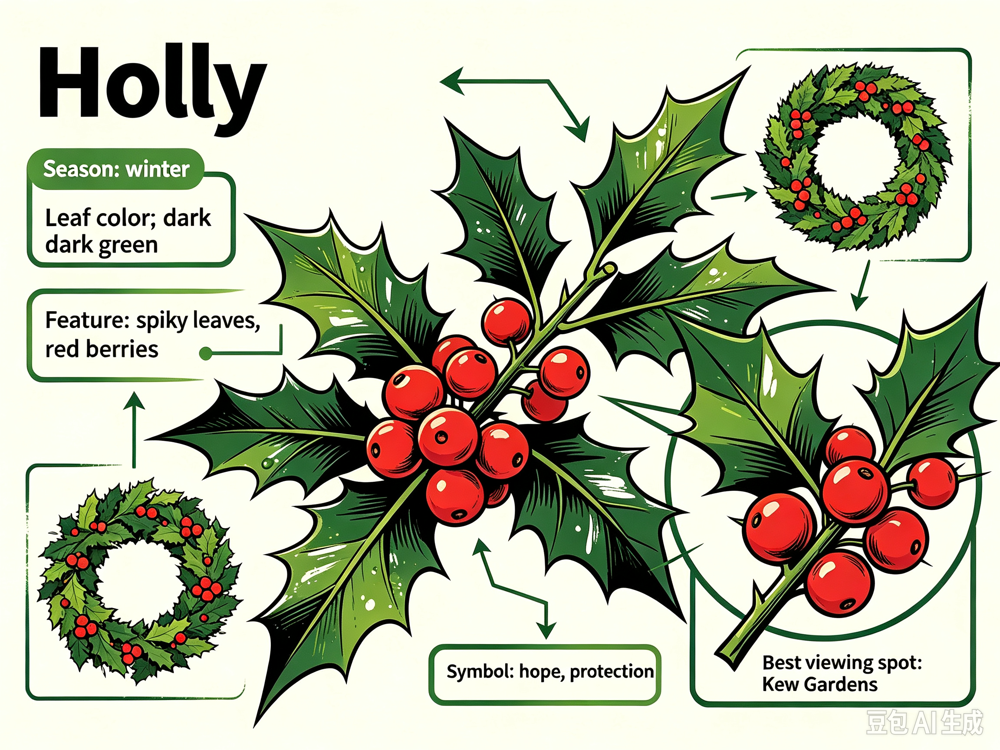

Holly is the classic winter evergreen plant native to Britain. It has glossy dark-green spiky leaves and bright red round berries that stay vibrant through cold winter and light frost. Unlike many plants that shed leaves and fade in cold months, holly remains lush and vigorous all winter long. For hundreds of years, holly has stood for hope, resilience and protection against harsh cold weather. It is widely used for seasonal decorations, and its red berries and dark green foliage create striking visual contrast in the bare winter landscape.

Hollyis an essential part of British Christmas traditions. People cut holly branches to make wreaths and garlands for front doors and indoor ornaments. It is believed to bring good fortune for the coming new year. Local winter markets sell fresh holly bunches during festive season.
Best Time: December to January
Location: Royal Botanic Gardens, Kew (Victoria Gate), Richmond TW9 3AB, United Kingdom
How to Get There: From central London, take the District Line Underground directly to Kew Gardens Station. The journey takes around 30 minutes.
GPS Coordinates: 51.4747° N, -0.2955° W
Richmond, United Kingdom